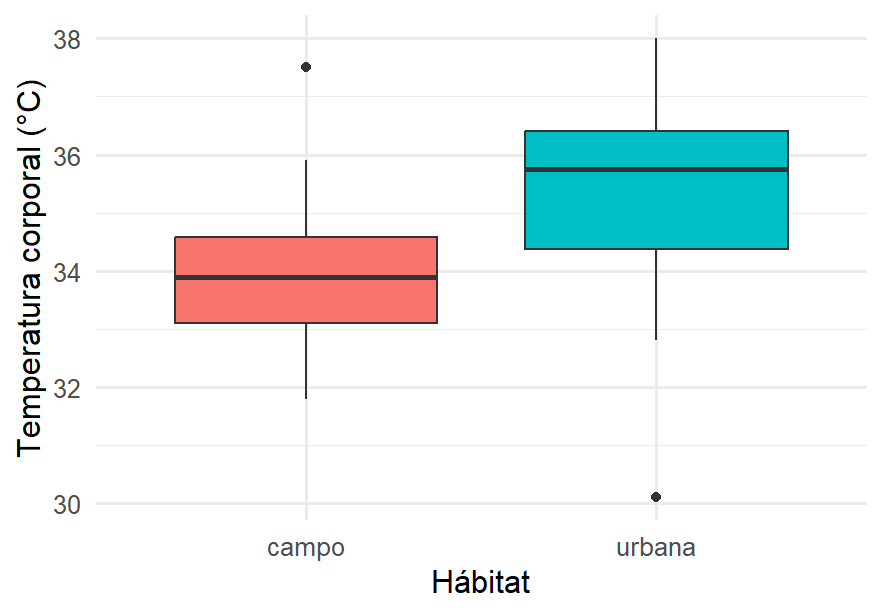
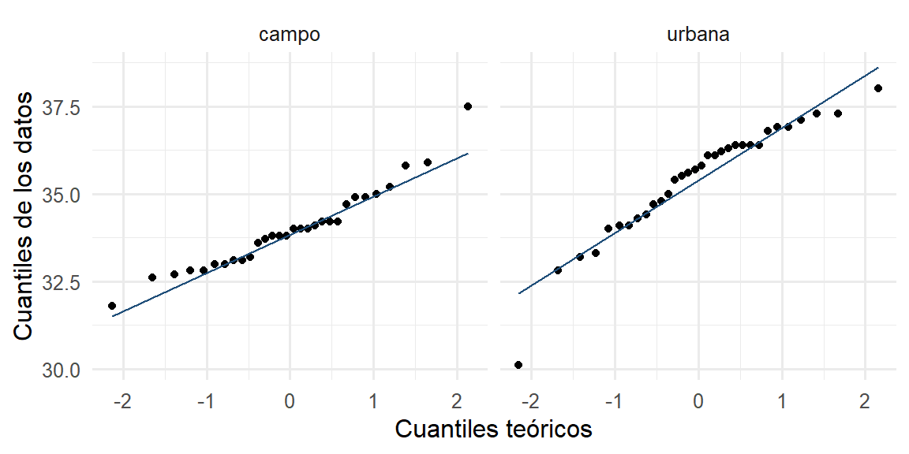

ggplot(lagartijas, aes(x = habitat, y = temp_corporal, fill = habitat)) +
geom_boxplot() +
labs(x = "Hábitat", y = "Temperatura corporal (°C)") +
theme(legend.position = "none")
El contenido de este capítulo está completo, pero todavía no pasa por la revisión final de redacción. Se avisará en clase cuando quede listo para estudiar de aquí. Mientras tanto se puede consultar, con esa advertencia.
En el Capítulo 8 comparamos una muestra contra un valor de referencia. Pero la pregunta más común en la práctica es otra: ¿estos dos grupos difieren? ¿Las lagartijas urbanas son más cálidas que las de campo? ¿La versión nueva del sistema es más rápida que la anterior? Ese es el tema de este capítulo.
Dos muestras son independientes cuando los individuos de una no tienen relación con los de la otra: lagartijas distintas, usuarios distintos, parcelas distintas. El parámetro de interés es la diferencia de medias \(\mu_1 - \mu_2\), y el procedimiento es el mismo de siempre: un estimador (la diferencia de medias muestrales), su error estándar, y a partir de ahí el intervalo y la prueba.
Empecemos como siempre: mirando los datos.
ggplot(lagartijas, aes(x = habitat, y = temp_corporal, fill = habitat)) +
geom_boxplot() +
labs(x = "Hábitat", y = "Temperatura corporal (°C)") +
theme(legend.position = "none")
lagartijas |>
group_by(habitat) |>
summarise(n = n(), media = mean(temp_corporal), de = sd(temp_corporal))Ahora la inferencia. Las hipótesis son \(H_0: \mu_1 = \mu_2\) (equivalente a \(\mu_1 - \mu_2 = 0\)) contra \(H_1: \mu_1 \neq \mu_2\):
t.test(temp_corporal ~ habitat, data = lagartijas)
#>
#> Welch Two Sample t-test
#>
#> data: temp_corporal by habitat
#> t = -4.0045, df = 56.239, p-value = 0.0001842
#> alternative hypothesis: true difference in means between group campo and group urbana is not equal to 0
#> 95 percent confidence interval:
#> -2.1584179 -0.7190821
#> sample estimates:
#> mean in group campo mean in group urbana
#> 33.98000 35.41875El valor p es muy pequeño, así que rechazamos \(H_0\): las lagartijas urbanas son significativamente más cálidas. Pero lo más informativo es el intervalo de confianza de la diferencia: nos dice que la diferencia real ronda 1.4 °C. Redacción para una bióloga: “Las lagartijas de zona urbana presentan una temperatura corporal media aproximadamente 1.4 °C mayor que las de campo abierto (p < 0.001), diferencia compatible con el efecto de isla de calor urbana.”
Nótese que R usa por omisión la prueba t de Welch, que no exige que las dos poblaciones tengan la misma varianza. Es la opción segura y la recomendable por defecto.
Con cinco lagartijas de cada hábitat, la comparación cabe en una hoja:
| Urbanas | 35.1 | 36.4 | 35.8 | 36.0 | 34.7 |
|---|---|---|---|---|---|
| Campo | 33.8 | 34.2 | 33.5 | 34.4 | 33.1 |
Paso 1. Resumir cada grupo por separado, con la fórmula de cálculo del Sección 2.2.1:
\[\bar{x}_1 = 35.60, \quad s_1^2 = 0.475 \qquad\qquad \bar{x}_2 = 33.80, \quad s_2^2 = 0.275\]
Paso 2. El error estándar de la diferencia. No se suman las desviaciones sino las varianzas divididas entre sus tamaños:
\[\text{EE} = \sqrt{\frac{s_1^2}{n_1} + \frac{s_2^2}{n_2}} = \sqrt{\frac{0.475}{5} + \frac{0.275}{5}} = \sqrt{0.15} = 0.3873\]
Paso 3. El estadístico, con la misma estructura de siempre:
\[t = \frac{\bar{x}_1 - \bar{x}_2}{\text{EE}} = \frac{35.60 - 33.80}{0.3873} = \frac{1.80}{0.3873} = 4.648\]
Paso 4. La decisión. Con la aproximación de Welch los grados de libertad son aproximadamente 7.5; el valor crítico bilateral al 5 % ronda 2.36. Como \(4.648 > 2.36\), se rechaza \(H_0\).
urb <- c(35.1, 36.4, 35.8, 36.0, 34.7)
cam <- c(33.8, 34.2, 33.5, 34.4, 33.1)
t.test(urb, cam)
#>
#> Welch Two Sample t-test
#>
#> data: urb and cam
#> t = 4.6476, df = 7.4689, p-value = 0.001979
#> alternative hypothesis: true difference in means is not equal to 0
#> 95 percent confidence interval:
#> 0.8957119 2.7042881
#> sample estimates:
#> mean of x mean of y
#> 35.6 33.8Coinciden: \(t = 4.648\) y \(p \approx 0.002\).
Lo revelador es comparar esta fórmula con la del Sección 8.6.1. Son la misma idea: una diferencia dividida entre su error estándar. Lo único que cambia es qué diferencia se mide (contra un valor de referencia, o entre dos grupos) y cómo se calcula el error estándar correspondiente. Casi todos los estadísticos de prueba del curso tienen esta forma, y reconocerla vale más que memorizar cada variante.
Un detalle que suele confundir: los grados de libertad de Welch salen de una fórmula fea que da un número no entero (aquí 7.5). No hay que calcularla a mano; basta saber que quedan entre el menor de los \(n_i - 1\) y su suma, y usar el valor crítico correspondiente.
Un resultado no significativo también es un resultado, y saber reportarlo es parte del oficio. Comparemos ahora la longitud hocico–cloaca:
t.test(lhc_mm ~ habitat, data = lagartijas)
#>
#> Welch Two Sample t-test
#>
#> data: lhc_mm by habitat
#> t = -1.1542, df = 59.985, p-value = 0.253
#> alternative hypothesis: true difference in means between group campo and group urbana is not equal to 0
#> 95 percent confidence interval:
#> -4.284754 1.149337
#> sample estimates:
#> mean in group campo mean in group urbana
#> 62.41667 63.98438Aquí el valor p ronda 0.25: no rechazamos \(H_0\). La redacción correcta es “no encontramos evidencia de que la longitud difiera entre hábitats”, y no “se demostró que son iguales”.
Obsérvese el intervalo de confianza de la diferencia: incluye al cero, pero también valores de varios milímetros en ambas direcciones. Es decir, los datos son compatibles con “no hay diferencia” y también con “hay una diferencia moderada”: simplemente no tenemos precisión suficiente para distinguirlas. Por eso el intervalo es más honesto que el valor p.
Aquí se corrige una intuición muy extendida: “si las cajas se traslapan, no hay diferencia”. Falso. Al mover la diferencia real entre grupos y el tamaño de muestra se observa que con \(n\) grande dos cajas que se traslapan bastante pueden resultar claramente significativas.
Con la diferencia en 0.8 y el tamaño en 10 por grupo. Las cajas se traslapan y el resultado casi nunca es significativo. Al subir \(n\) a 150 sin tocar la diferencia: las cajas se traslapan prácticamente igual, pero el valor p se desploma y la diferencia se vuelve significativa.
¿Por qué? Porque la caja describe la dispersión de los datos individuales, mientras que la prueba se refiere a la precisión de las medias, que mejora con \(\sqrt{n}\). Son cosas distintas. Por eso el traslape de cajas no es criterio para decidir significancia (y, en el otro sentido, tampoco basta con que las cajas se separen si \(n\) es minúsculo).
Vale la pena el caso incómodo: diferencia en 0 con \(n = 200\). De vez en cuando saldrá “significativo”: es el error tipo I, ocurriendo el 5 % de las veces, tal como está diseñado.
A veces las observaciones vienen en parejas naturales: el mismo paciente antes y después, el mismo terreno con dos tratamientos, o (como en nuestro proyecto) el mismo juez calificando dos marcas. Ignorar ese emparejamiento desperdicia información.
La solución es elegante: se calcula la diferencia dentro de cada par y se le aplica la prueba de una muestra del Capítulo 8, con \(H_0: \mu_d = 0\).
galletas <- read.csv("datos/galletas.csv")
pares <- galletas |>
filter(marca %in% c("Oreo", "GreatValue")) |>
pivot_wider(id_cols = juez, names_from = marca, values_from = agrado)
t.test(pares$Oreo, pares$GreatValue, paired = TRUE)
#>
#> Paired t-test
#>
#> data: pares$Oreo and pares$GreatValue
#> t = 8.195, df = 24, p-value = 2.055e-08
#> alternative hypothesis: true mean difference is not equal to 0
#> 95 percent confidence interval:
#> 1.765635 2.954365
#> sample estimates:
#> mean difference
#> 2.36La diferencia media es de unos 2.4 puntos de agrado a favor de Oreo, con un intervalo aproximado de 1.8 a 3.0 y un valor p minúsculo.
La ventaja del análisis pareado es que elimina la variabilidad entre jueces: no importa que Juan califique todo alto y María todo bajo, porque a cada quien se le resta consigo mismo. Al quitar esa fuente de ruido, la prueba gana potencia. Aplicar por error una prueba de muestras independientes aquí daría un resultado más débil y sería metodológicamente incorrecto.
La regla: si se puede trazar una línea que una cada dato de un grupo con exactamente un dato del otro, los datos son pareados.
En la industria del software, comparar dos versiones de un sistema con usuarios asignados al azar se llama prueba A/B. Estadísticamente no es nada nuevo: es un experimento aleatorizado (Capítulo 5) analizado con una comparación de dos muestras.
Comparemos el tiempo de ejecución del mismo algoritmo en dos entornos:
ab <- read.csv("datos/algoritmos_ab.csv")
ab |> group_by(entorno) |> summarise(n = n(), media = mean(tiempo_ms), de = sd(tiempo_ms))t.test(tiempo_ms ~ entorno, data = ab)
#>
#> Welch Two Sample t-test
#>
#> data: tiempo_ms by entorno
#> t = -4.7936, df = 51.051, p-value = 1.457e-05
#> alternative hypothesis: true difference in means between group Mac and group Windows is not equal to 0
#> 95 percent confidence interval:
#> -2.839963 -1.163370
#> sample estimates:
#> mean in group Mac mean in group Windows
#> 10.58367 12.58533Windows resulta unos 2 ms más lento en promedio, con un valor p muy pequeño. Reportar solo “es significativo” sería insuficiente: lo que decide si vale la pena migrar es el tamaño del efecto y su intervalo, junto con el costo de cambiar. Es la misma lección del Capítulo 8: significancia estadística no es relevancia práctica.
Este tema queda fuera del temario básico del curso, pero aparece con frecuencia en la práctica (y en las evaluaciones de posgrado) y motiva el chequeo de supuestos del ANOVA (Capítulo 11).
A veces la pregunta no es sobre el centro sino sobre la variabilidad: ¿un proceso es más consistente que otro? Se compara mediante el cociente de varianzas, cuya distribución bajo \(H_0: \sigma_1^2 = \sigma_2^2\) es una F de Fisher.
var.test(temp_corporal ~ habitat, data = lagartijas)
#>
#> F test to compare two variances
#>
#> data: temp_corporal by habitat
#> F = 0.51398, num df = 29, denom df = 31, p-value = 0.07508
#> alternative hypothesis: true ratio of variances is not equal to 1
#> 95 percent confidence interval:
#> 0.2488309 1.0712082
#> sample estimates:
#> ratio of variances
#> 0.5139797El cociente de varianzas es cercano a 2 (la desviación urbana es 1.63 °C contra 1.17 °C en el campo). Además de ser más cálidas, las lagartijas urbanas son más variables, lo cual es biológicamente razonable: la ciudad ofrece microambientes muy distintos (asfalto, sombra, jardines) mientras que el campo abierto es más homogéneo.
Cuidado: la prueba F es muy sensible a la no normalidad. Si los datos no son aproximadamente normales, conviene usar la prueba de Levene, más robusta.
Antes de confiar en cualquiera de estas pruebas, hay que revisar tres cosas:
ggplot(lagartijas, aes(sample = temp_corporal)) +
stat_qq() + stat_qq_line(color = "#1F4E79") +
facet_wrap(~habitat) +
labs(x = "Cuantiles teóricos", y = "Cuantiles de los datos")
Con dos grupos:
| Situación | Técnica en R |
|---|---|
| Dos grupos independientes, variable cuantitativa | t.test(y ~ grupo) (Welch) |
| Observaciones emparejadas (antes/después, mismo sujeto) | t.test(x, y, paired = TRUE) |
| Prueba A/B con una métrica numérica | Es el primer caso: t.test(y ~ version) |
| Comparar variabilidad entre dos grupos | var.test(y ~ grupo) |
| Los supuestos de normalidad fallan con \(n\) pequeño | Prueba no paramétrica (wilcox.test) |
Siempre: primero el boxplot, luego la prueba, y reportar el intervalo de la diferencia, no solo el valor p.
Para comparar dos grupos, el parámetro de interés es la diferencia de medias. Con grupos independientes usamos la prueba t de Welch; con datos pareados, la diferencia dentro de cada par convierte el problema en uno de una sola muestra, ganando potencia al eliminar la variabilidad entre sujetos. Una prueba A/B no es más que este análisis con vocabulario de la industria. El traslape de cajas no decide la significancia, porque las cajas describen los datos y la prueba habla de las medias. Y un resultado no significativo significa “no hay evidencia suficiente”, no “son iguales”. En el Capítulo 10 pasaremos a las variables categóricas: proporciones y tablas de contingencia.
Dos grupos. Con datos/lagartijas.csv, prueba si la masa difiere entre hábitats. Reportar el intervalo de la diferencia e interpretar en una frase.
Pareado o independiente. Clasificar cada situación:
Pareado en R. Con los datos de galletas, comparar Oreo contra Chokis de forma pareada. ¿La diferencia es significativa? Compárala con la de Oreo contra Great Value.
El error de ignorar el emparejamiento. Correr la comparación del ejercicio 3 dos veces: una con paired = TRUE y otra con paired = FALSE. ¿En cuál el valor p es menor? Explicar por qué.
Laboratorio. En el Sección 9.2.1, fijar la diferencia en 0.5 y encontrar aproximadamente el \(n\) mínimo con el que el resultado se vuelve consistentemente significativo. ¿Qué nos dice eso sobre el diseño de un estudio?
Varianzas. Aplicar var.test() a la longitud (lhc_mm) por hábitat. ¿Difieren las variabilidades? Combinar este resultado con el de la prueba de medias del capítulo para describir a los dos grupos.
Redacción. Una prueba A/B con 40 usuarios por grupo da \(p = 0.08\) para una diferencia observada de 3 segundos. Escribir la conclusión correcta y señala qué NO se puede afirmar.
1. Con t.test(masa_g ~ habitat, data = lagartijas) se obtiene un valor p cercano a 0.01: las lagartijas urbanas son significativamente más pesadas, con una diferencia media aproximada de 1.6 g y un intervalo que no incluye al cero. Interpretación: “Las lagartijas urbanas pesan en promedio alrededor de 1.6 g más que las de campo abierto (p ≈ 0.01)”. Nótese que la evidencia aquí es más moderada que en la temperatura (p < 0.001). Conviene reflejar esa diferencia de fuerza en la redacción.
2. (a) Pareado: el mismo paciente medido dos veces. (b) Independiente: son parcelas distintas. (c) Pareado: el mismo juez califica ambas marcas. (d) Independiente: corridas distintas, sin correspondencia una a una. La prueba decisiva: ¿puedo unir cada dato de un grupo con exactamente uno del otro por una razón sustantiva? En (d) la corrida 7 de Mac no tiene nada que ver con la 7 de Windows, así que no.
3. La diferencia media Oreo − Chokis es de apenas 0.52 puntos, con \(p \approx 0.07\): no alcanza significancia al 5 %. Compárala con Oreo − Great Value, donde la diferencia es de 2.36 puntos y \(p < 0.001\). Conclusión: hay evidencia clara de que Oreo supera a Great Value, pero no de que supere a Chokis. Esto ilustra algo que reaparecerá en el Capítulo 11: no basta con saber que “las marcas difieren”; hay que averiguar entre cuáles está la diferencia, y para eso servirán las pruebas post-hoc. Nótese además que un p de 0.07 no significa “casi significativo”: significa que los datos son razonablemente compatibles con que ambas marcas gusten igual.
4. El valor p es menor con paired = TRUE (≈ 0.07 pareado contra ≈ 0.12 sin parear). Al emparejar, la variabilidad entre jueces (unos califican todo alto, otros todo bajo) desaparece del cálculo, así que el error estándar se reduce y la prueba gana potencia. Aquí ninguna de las dos versiones resulta significativa, pero el ejemplo muestra el mecanismo con claridad. El análisis correcto extrae más información de los mismos datos. Y ojo: ignorar el emparejamiento no es solo perder sensibilidad, es aplicar una prueba cuyo supuesto de independencia no se cumple, porque las dos calificaciones vienen de la misma persona.
5. Con una diferencia de 0.5 y una desviación de 2 en cada grupo, se necesitan aproximadamente 250 a 300 observaciones por grupo para detectar el efecto de forma consistente. Con \(n = 20\) el resultado casi nunca sale significativo aunque la diferencia exista de verdad. Esto es el poder estadístico, y la lección de diseño es enorme. Un estudio con muestra insuficiente puede no detectar un efecto real, lo que produce el error tipo II. Por eso el tamaño de muestra debe calcularse antes de recolectar, no lamentarse después.
6. El cociente de varianzas de lhc_mm es cercano a 1 (desviaciones de 5.5 y 5.2 mm), así que no hay evidencia de que las variabilidades difieran. Combinando con la prueba de medias: en longitud, los dos grupos son similares tanto en centro como en dispersión. En cambio, en temperatura difieren en ambas cosas. Buen ejercicio de síntesis: describir un grupo requiere hablar de centro y de dispersión, como aprendimos en el Capítulo 2.
7. Conclusión correcta: “Con 40 usuarios por grupo, la diferencia observada de 3 segundos no alcanzó significancia estadística al nivel del 5 % (p = 0.08); no hay evidencia suficiente para afirmar que las versiones difieran.” No se puede afirmar: que las versiones sean iguales; que “casi” hay diferencia (el valor p no mide grados de casi); ni que el efecto no exista. Lo que sí conviene añadir: el intervalo de confianza de la diferencia, que probablemente incluya tanto el cero como efectos de varios segundos, y notar que la muestra pudo ser insuficiente para detectar un efecto real. Este es el escenario donde más se cae en el “casi significativo”: la respuesta profesional es reportar el intervalo y, si el efecto importa, repetir el estudio con más usuarios.